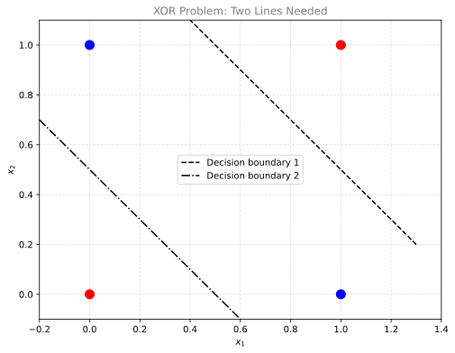
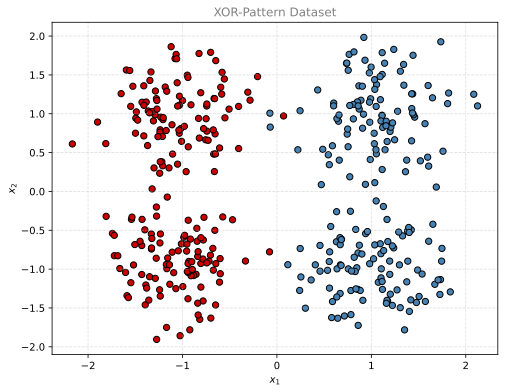
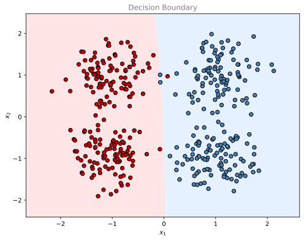

%config InlineBackend.figure_formats = ['svg']
import numpy as np
import matplotlib.pyplot as plt
from sklearn.datasets import make_blobs
np.random.seed(3)Lab: Neural Network with Two Layers
calculus
In this lab, you will build a neural network with two layers and train it to solve a classification problem that a single perceptron cannot handle. By…
In this lab, you will build a neural network with two layers and train it to solve a classification problem that a single perceptron cannot handle. By the end of this lab, you will be able to:
- Implement a neural network with two layers for a classification problem
- Implement forward propagation using matrix multiplication
- Perform backward propagation to update the network weights
1. Classification Problem
Why One Perceptron Is Not Enough
In previous work, we trained a single perceptron to solve a “linear” classification problem. A single perceptron finds a straight line in the plane that separates two classes. But what if one line is not enough?
Consider this classic XOR-like problem: you have four data points, and the two classes are arranged so that no single straight line can separate them.
| Point | Class |
|---|---|
| (0, 0) | Red (0) |
| (0, 1) | Blue (1) |
| (1, 0) | Blue (1) |
| (1, 1) | Red (0) |
The red points sit at opposite corners of a square, and the blue points sit at the other two corners. You need two decision boundaries (two lines) to separate them correctly.
Let us plot this XOR problem with two decision boundary lines:
%config InlineBackend.figure_formats = ['svg']
fig, ax = plt.subplots(figsize=(8, 6))
xmin, xmax = -0.2, 1.4
x_line = np.arange(xmin, xmax, 0.1)
# Data points from two classes
ax.scatter(0, 0, color="r", s=100, zorder=5)
ax.scatter(0, 1, color="b", s=100, zorder=5)
ax.scatter(1, 0, color="b", s=100, zorder=5)
ax.scatter(1, 1, color="r", s=100, zorder=5)
ax.set_xlim([xmin, xmax])
ax.set_ylim([-0.1, 1.1])
ax.set_xlabel('$x_1$')
ax.set_ylabel('$x_2$')
ax.set_title('XOR Problem: Two Lines Needed', fontsize=12, color='gray')
# Two decision boundary lines
ax.plot(x_line, -1 * x_line + 1.5, color="black", linestyle='--', label='Decision boundary 1')
ax.plot(x_line, -1 * x_line + 0.5, color="black", linestyle='-.', label='Decision boundary 2')
ax.legend()
ax.grid(linestyle='--', alpha=0.4)
plt.show()
A single perceptron can only draw one line. To classify the XOR pattern correctly, we need at least two perceptrons in a hidden layer, each drawing its own line, and then a third perceptron in the output layer that combines their results.
Dataset
Now let us generate a larger dataset with this same XOR structure. We use make_blobs from scikit-learn to create 400 data points in four clusters, arranged in an XOR pattern.
%config InlineBackend.figure_formats = ['svg']
m = 400
centers = [[-1, 1], [1, 1], [1, -1], [-1, -1]]
X_raw, cluster_labels = make_blobs(
n_samples=m,
centers=centers,
cluster_std=0.4,
random_state=3
)
# Assign labels in XOR pattern:
# Clusters 0 and 3 are class 0 (red)
# Clusters 1 and 2 are class 1 (blue)
Y_raw = np.array([0 if label in [0, 3] else 1 for label in cluster_labels])
# Reshape for our neural network: X should be (2, m) and Y should be (1, m)
X = X_raw.T
Y = Y_raw.reshape(1, m)
print(f"Shape of X: {X.shape}")
print(f"Shape of Y: {Y.shape}")
print(f"Number of training examples: {m}")Shape of X: (2, 400)
Shape of Y: (1, 400)
Number of training examples: 400%config InlineBackend.figure_formats = ['svg']
fig, ax = plt.subplots(figsize=(8, 6))
colors = np.where(Y.ravel() == 0, '#CC0000', '#4682B4')
ax.scatter(X[0, :], X[1, :], c=colors, edgecolors='k', s=40)
ax.set_xlabel('$x_1$')
ax.set_ylabel('$x_2$')
ax.set_title('XOR-Pattern Dataset', fontsize=12, color='gray')
ax.grid(linestyle='--', alpha=0.4)
plt.show()
You can see four clusters. The red points (class 0) are in the top-left and bottom-right, while the blue points (class 1) are in the top-right and bottom-left. No single straight line can separate these two classes.
2. Neural Network Architecture
Network Structure
Our two-layer neural network has:
- Input layer: 2 features (\(x_1\), \(x_2\)), so size \(n_x = 2\)
- Hidden layer: 2 neurons with sigmoid activation, so size \(n_h = 2\)
- Output layer: 1 neuron with sigmoid activation, so size \(n_y = 1\)
Each hidden neuron draws one “line” through the data, and the output neuron combines them to make the final prediction.
Forward Propagation
Forward propagation computes the output of the network given the input. The formulas are:
\[Z^{[1]} = W^{[1]}X + b^{[1]}\]
\[A^{[1]} = \sigma(Z^{[1]})\]
\[Z^{[2]} = W^{[2]}A^{[1]} + b^{[2]}\]
\[A^{[2]} = \sigma(Z^{[2]})\]
where \(\sigma(z) = \frac{1}{1 + e^{-z}}\) is the sigmoid function.
Here:
- \(W^{[1]}\) has shape \((n_h, n_x) = (2, 2)\)
- \(b^{[1]}\) has shape \((n_h, 1) = (2, 1)\)
- \(W^{[2]}\) has shape \((n_y, n_h) = (1, 2)\)
- \(b^{[2]}\) has shape \((n_y, 1) = (1, 1)\)
Cost Function
We use the log loss (binary cross-entropy) cost function:
\[J = -\frac{1}{m}\sum_{i=1}^{m}\left[Y^{(i)}\log(A^{[2](i)}) + (1-Y^{(i)})\log(1-A^{[2](i)})\right]\]
This measures how far our predictions \(A^{[2]}\) are from the true labels \(Y\).
Backward Propagation
To train the network, we compute how the cost changes with respect to each parameter. The derivative formulas are:
\[dZ^{[2]} = A^{[2]} - Y\]
\[dW^{[2]} = \frac{1}{m} dZ^{[2]} (A^{[1]})^T\]
\[db^{[2]} = \frac{1}{m} \sum dZ^{[2]}\]
\[dZ^{[1]} = (W^{[2]})^T dZ^{[2]} \cdot A^{[1]} \cdot (1 - A^{[1]})\]
\[dW^{[1]} = \frac{1}{m} dZ^{[1]} X^T\]
\[db^{[1]} = \frac{1}{m} \sum dZ^{[1]}\]
where \(\cdot\) denotes element-wise multiplication in the \(dZ^{[1]}\) formula. The term \(A^{[1]} \cdot (1 - A^{[1]})\) is the derivative of the sigmoid function.
3. Implementation
Now let us implement each piece step by step.
3.1 Sigmoid Function
The sigmoid function squashes any real number into the range (0, 1). It is used as the activation function in both layers.
def sigmoid(z):
return 1 / (1 + np.exp(-z))3.2 Network Structure
This helper function returns the sizes of each layer.
def layer_sizes(X, Y):
n_x = X.shape[0] # input layer size (number of features)
n_h = 2 # hidden layer size
n_y = Y.shape[0] # output layer size
return (n_x, n_h, n_y)3.3 Initialize Parameters
We initialize weights to small random values (to break symmetry) and biases to zero.
def initialize_parameters(n_x, n_h, n_y):
W1 = np.random.randn(n_h, n_x) * 0.01
b1 = np.zeros((n_h, 1))
W2 = np.random.randn(n_y, n_h) * 0.01
b2 = np.zeros((n_y, 1))
return {"W1": W1, "b1": b1, "W2": W2, "b2": b2}Why multiply by 0.01? If the weights start too large, the sigmoid outputs will be near 0 or 1, where the gradient is almost zero. Small weights keep us in the “active” region of the sigmoid at the start of training.
3.4 Forward Propagation
This function computes the output of the network for all training examples at once using matrix multiplication.
def forward_propagation(X, parameters):
W1 = parameters["W1"]
b1 = parameters["b1"]
W2 = parameters["W2"]
b2 = parameters["b2"]
Z1 = np.dot(W1, X) + b1
A1 = sigmoid(Z1)
Z2 = np.dot(W2, A1) + b2
A2 = sigmoid(Z2)
cache = {"Z1": Z1, "A1": A1, "Z2": Z2, "A2": A2}
return A2, cache3.5 Cost Function
This computes the log loss across all training examples.
def compute_cost(A2, Y):
m = Y.shape[1]
cost = -(1/m) * np.sum(Y * np.log(A2) + (1 - Y) * np.log(1 - A2))
return float(np.squeeze(cost))3.6 Backward Propagation
This function computes the gradients (partial derivatives) of the cost with respect to each parameter.
def backward_propagation(parameters, cache, X, Y):
m = X.shape[1]
W2 = parameters["W2"]
A1 = cache["A1"]
A2 = cache["A2"]
dZ2 = A2 - Y
dW2 = (1/m) * np.dot(dZ2, A1.T)
db2 = (1/m) * np.sum(dZ2, axis=1, keepdims=True)
dZ1 = np.dot(W2.T, dZ2) * A1 * (1 - A1)
dW1 = (1/m) * np.dot(dZ1, X.T)
db1 = (1/m) * np.sum(dZ1, axis=1, keepdims=True)
return {"dW1": dW1, "db1": db1, "dW2": dW2, "db2": db2}3.7 Update Parameters
Gradient descent updates each parameter by subtracting the learning rate times the gradient.
def update_parameters(parameters, grads, learning_rate=1.2):
parameters["W1"] -= learning_rate * grads["dW1"]
parameters["b1"] -= learning_rate * grads["db1"]
parameters["W2"] -= learning_rate * grads["dW2"]
parameters["b2"] -= learning_rate * grads["db2"]
return parameters3.8 Full Model
This function puts everything together: initialize, then loop through forward propagation, cost computation, backward propagation, and parameter updates.
def nn_model(X, Y, n_h, num_iterations=10000, learning_rate=1.2, print_cost=False):
np.random.seed(3)
n_x, _, n_y = layer_sizes(X, Y)
parameters = initialize_parameters(n_x, n_h, n_y)
for i in range(num_iterations):
A2, cache = forward_propagation(X, parameters)
cost = compute_cost(A2, Y)
grads = backward_propagation(parameters, cache, X, Y)
parameters = update_parameters(parameters, grads, learning_rate)
if print_cost and i % 1000 == 0:
print(f"Cost after iteration {i}: {cost:.4f}")
return parameters4. Training and Results
Training
Let us train our neural network with 2 hidden neurons, a learning rate of 1.2, and 10,000 iterations.
parameters = nn_model(X, Y, n_h=2, num_iterations=10000, learning_rate=1.2, print_cost=True)Cost after iteration 0: 0.6932
Cost after iteration 1000: 0.0131
Cost after iteration 2000: 0.0121
Cost after iteration 3000: 0.0113
Cost after iteration 4000: 0.0107
Cost after iteration 5000: 0.0104
Cost after iteration 6000: 0.0101
Cost after iteration 7000: 0.0099
Cost after iteration 8000: 0.0098
Cost after iteration 9000: 0.0096The cost decreases with each iteration, which means the network is learning.
Prediction Function
To make predictions, we run forward propagation and threshold the output at 0.5.
def predict(parameters, X):
A2, _ = forward_propagation(X, parameters)
return (A2 > 0.5).astype(int)Decision Boundary
Let us visualize the decision boundary that our trained network has learned.
%config InlineBackend.figure_formats = ['svg']
def plot_decision_boundary(parameters, X, Y):
x_min, x_max = X[0, :].min() - 0.5, X[0, :].max() + 0.5
y_min, y_max = X[1, :].min() - 0.5, X[1, :].max() + 0.5
h = 0.01
xx, yy = np.meshgrid(np.arange(x_min, x_max, h), np.arange(y_min, y_max, h))
Z = predict(parameters, np.c_[xx.ravel(), yy.ravel()].T)
Z = Z.reshape(xx.shape)
fig, ax = plt.subplots(figsize=(8, 6))
from matplotlib.colors import ListedColormap
ax.contourf(xx, yy, Z, cmap=ListedColormap(['#FFCCCC', '#CCE5FF']), alpha=0.5)
colors = np.where(Y.ravel() == 0, '#CC0000', '#4682B4')
ax.scatter(X[0, :], X[1, :], c=colors, edgecolors='k', s=40)
ax.set_xlabel('$x_1$')
ax.set_ylabel('$x_2$')
ax.set_title('Decision Boundary', fontsize=12, color='gray')
plt.show()
plot_decision_boundary(parameters, X, Y)
Accuracy
Let us compute the accuracy of our trained model on the training data.
predictions = predict(parameters, X)
accuracy = np.mean(predictions == Y) * 100
print(f"Accuracy: {accuracy:.2f}%")Accuracy: 99.25%The neural network with just two hidden neurons can learn the XOR-pattern decision boundary that a single perceptron never could. This is the power of adding layers to a network: each layer can learn increasingly complex features of the data.